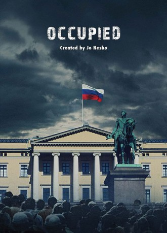

#8278 Occupied - Die Besatzung
 
 IMDB-Wertung: 7.7 / 10
IMDB-Wertung: 7.7 / 10  Metascore: 0
Metascore: 0 
In the near future, Norway is occupied by Russia on behalf of the European Union, due to the fact that the newly elected environmental friendly Norwegian government has stopped the all important oil- and gas-production in the North Sea.
Jahr: 2015
Dauer: 45 Minuten
FSK:
Land: Norwegen Studio: TV2 NorwayTonspuren:
Untertitel:
Auflösung: 720p (1280x636) Größe: 770 MB
Genre: Thriller, Drama, TV-Serie
Regisseur: Erik Skjoldbjærg, Jens Lien, John Andreas Andersen, Pål Sletaune, Erik Richter Strand, Eva Sørhaug, Charlotte Brändström
Drehbuch: Karianne Lund
Soundtrack:
Darsteller:
- Eldar Skar als Hans Martin Djupvik 18 episodes, 2015-2017
 Ane Dahl Torp als Bente Norum 18 episodes, 2015-2017
Ane Dahl Torp als Bente Norum 18 episodes, 2015-2017 Ingeborga Dapkunaite als Irina Sidorova 18 episodes, 2015-2017
Ingeborga Dapkunaite als Irina Sidorova 18 episodes, 2015-2017- Selome Emnetu als Hilde Djupvik / ... 18 episodes, 2015-2017
- Veslemøy Mørkrid als Ingrid Bø 13 episodes, 2015-2017
- Oddgeir Thune als Geir Buan 10 episodes, 2015-2017
- Sondre Larsen als Stefan Christensen 9 episodes, 2015-2017
 Hippolyte Girardot als Fransk EU-kommisær / ... 9 episodes, 2015-2017
Hippolyte Girardot als Fransk EU-kommisær / ... 9 episodes, 2015-2017 Vegar Hoel als Thomas Eriksen 8 episodes, 2015
Vegar Hoel als Thomas Eriksen 8 episodes, 2015 Lisa Loven Kongsli als Astrid Berg 8 episodes, 2015-2017
Lisa Loven Kongsli als Astrid Berg 8 episodes, 2015-2017- Morten Svartveit als Anders Knudsen 7 episodes, 2015-2017
- Øystein Røger als Dag Ottesen 6 episodes, 2015
- Vytautas Kaniusonis als Konstantin Minikov / ... 4 episodes, 2017
 Filip Peeters als Rudolf Teichmann 4 episodes, 2017
Filip Peeters als Rudolf Teichmann 4 episodes, 2017 Lenn Kudrjawizki als Orlov 4 episodes, 2015
Lenn Kudrjawizki als Orlov 4 episodes, 2015- Sajid Malik als Jesper Bergs rådgiver / ... 4 episodes, 2015-2017
- Krzysztof Pieczynski als Vladimir Gosev 3 episodes, 2015
- Kate Pendry als BBC Nyhetsanker 3 episodes, 2015
 Ville Virtanen als Antti Korhonen 3 episodes, 2017
Ville Virtanen als Antti Korhonen 3 episodes, 2017- Sacha Slengesol Balgobin als Mina 3 episodes, 2017
 Nigel Whitmey als Den amerikanske ambassadøren 2 episodes, 2015
Nigel Whitmey als Den amerikanske ambassadøren 2 episodes, 2015- Irina Kara als Zoya 2 episodes, 2017
- Erik Aleksander Schjerven als Sveinung 2 episodes, 2015
 Mehdi Nebbou als Jérôme Cohen 2 episodes, 2017
Mehdi Nebbou als Jérôme Cohen 2 episodes, 2017 Annika Hallin als Mari / ... 2 episodes, 2015
Annika Hallin als Mari / ... 2 episodes, 2015- Emil Johnsen als Eivind Birkeland / ... 2 episodes, 2015
- Jonas Bergland als Lege 2 episodes, 2015
- Thomas Chr. Hansen als Journalist 2 episodes, 2015
- Niko Rusakov als Livvakt / ... 2 episodes, 2015
- Sverre Anker Ousdal als Kongen av Norge 1 episode, 2015
- Kjærsti Odden Skjeldal als Khan's consulent 1 episode, 2017
- Jonathan Espolin-Johnson als Thomas Berg 1 episode, 2017
- Anne Cecilie Ukkelberg als Sykepleier 1 episode, 2015
- Martin Grid Toennesen als Delta Officer (uncredited) 3 episodes, 2017
- Harris Reiz als Audience / ... (uncredited) 2 episodes, 2017
- Anna Sedunova als Russian Secretary (uncredited) 2 episodes, 2017
 Truus de Boer als Lawyer (uncredited) 1 episode, 2017
Truus de Boer als Lawyer (uncredited) 1 episode, 2017- Sunniva Lind Høverstad als Journalist (uncredited) 1 episode, 2017
- Kenan Ibrahimefendic als Secret service agent (uncredited) 1 episode, 2017
- Benjamin Noble als BBC Journalist (uncredited) 1 episode, 2017
- Morten Pedersen als Police Officer (uncredited) 1 episode, 2017
- Henrik Mestad als Jesper Berg 18 episodes, 2015-2017
- Janne Heltberg als Anita Rygh / ... 18 episodes, 2015-2017
- Kristin Braut-Solheim als Maja Norum 16 episodes, 2015-2017
- Ragnhild Gudbrandsen als Wenche Arnesen 12 episodes, 2015-2017
- Alexej Manvelov als Nikolai / ... 12 episodes, 2015-2017
- Ella Malia Prince als Andrea Djupvik 11 episodes, 2015-2017
- Stig R. Amdam als Harald Vold 10 episodes, 2015-2017
- Daniel Rusten Larsen als Petter Eriksen 9 episodes, 2015
- Kristin Skogheim als Ingvild Friis 9 episodes, 2015-2017
Datei: X:\HD-Serien\Occupied - Die Besatzung\S01\Occupied - Die Besatzung - S01E01 - April.mkv seit 16.02.2018
Festplatte: HD Serien(I-ST)
 Es gibt insgesamt 182 Filme in der Gruppe 'HD-Serien'
Es gibt insgesamt 182 Filme in der Gruppe 'HD-Serien'